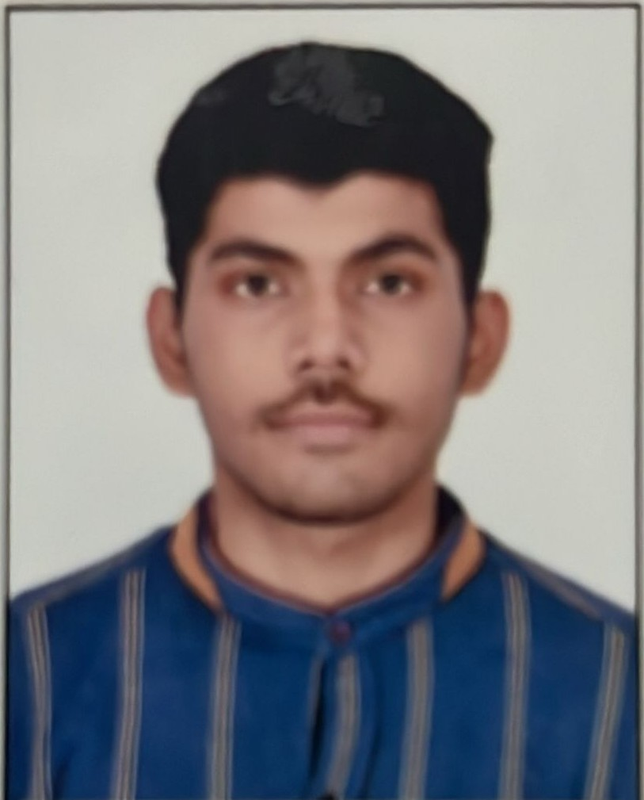

Aditya Narayan Pandey

Introduction
My name is Aditya Narayan Pandey, I was born and brought up in Prayagraj,Uttar Pradesh,India I am currently pursuing a degree in BTech from S.R.M. IST,Chennai,Tamil Nadu, India
Education
SRM Institute of Science and Technology Kattankulathur, India Bachelor of Technology in
Computer Science and Engineering | 2025 to Present
- Current Status: First-year student (Transitioning to 2nd year in June 2026)
- Relevant Coursework: Python Programming, Calculus, Physics, Object-Oriented
Programming (OOP)
Technical Skills
- Programming Languages: Python (Intermediate), C++(Intermediate),C(Intermediate), HTML, CSS
- Libraries & Data Science: NumPy, Pandas.
- Tools & Platforms: Git, GitHub, VS Code.
- Languages: English (Professional), Hindi (Native), French (A1/Beginner).
Projects
- ROJECTS Student Performance Data Analyzer | Python, NumPy, Pandas
- Developed a data analysis script to process student grade metrics using a 5x5 matrix structure
- Implemented NumPy for efficient array manipulation and statistical calculations to evaluate class performance trends.
- Optimized data handling using Pandas dataframes to organize and visualize output results.
- Structural Biology Visualization Interface | Web Development (HTML/CSS)
- Designed and deployed a front-end web interface to illustrate complex biological concepts, specifically focusing on the human immune system and structural biology.
- Translated theoretical scientific data into an accessible, user-friendly digital format for educational purposes.
Experience
- Core Team Member | F.A.S.T. Club (Associated with NVIDIA)SRM Institute of Science and Technology
- Technical initiatives and manage digital content creation for club events.
- Responsible for designing technical templates and coordinating social media outreach to increase student engagement with NVIDIA-related technologies.
Achievements & Certifications
- Finalist/Participant:Tamizhan Skills Ideathon 2026 (FinTech Domain).
- Certification:Udemy Python Bootcamp (In Progress).
- Certification:Udemy C++ course (In Progress)
Other